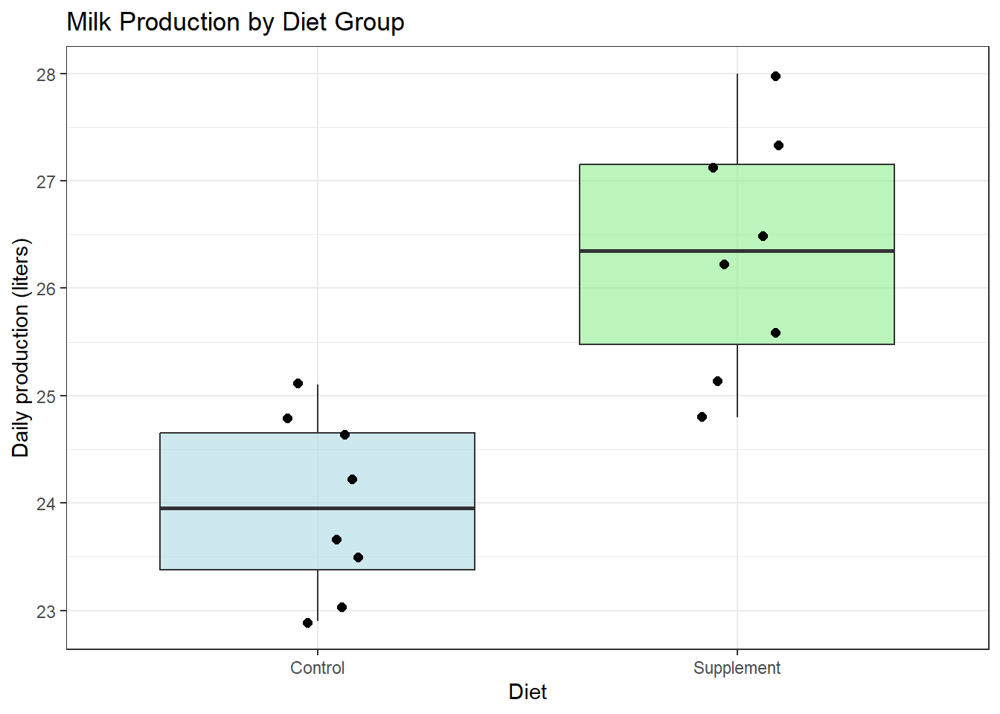

Dates: Monday October 26 · Wednesday October 28 · Friday October 30
12.1 Learning Objectives
By the end of this week, you should be able to:
Explain when a two-sample t-test is appropriate vs. a one-sample t-test.
Conduct an independent two-sample t-test by hand, in Excel, and in R.
Recognize when a paired t-test is more appropriate than an independent t-test.
Interpret the confidence interval for the difference between two means.
Make a management recommendation based on statistical results.
12.2 Background and Conceptual Introduction
In Week 10 we asked: “Is this group different from a known value?” Now we ask a more common question: “Are these two groups different from each other?”
This is the bread and butter of agricultural research. Does the new diet supplement increase milk production compared to the standard diet? Do treated plots yield more than untreated plots? Are fish from Lake A larger than fish from Lake B?
In all these cases, we have two independent groups, each measured on the same continuous variable, and we want to know whether the difference in their means is real or just random variation.
Think back to the Lego model analogy from linearmodels.qmd in the graduate course: our model of the world might say “Group A and Group B have the same mean” (\(H_0\)). Is that model good enough? The two-sample t-test helps us decide.
TipThink About It 🧠
A rancher gives a dietary supplement to 40 randomly selected cows and leaves 40 others on a standard diet. After 8 weeks, she measures milk production. The supplement group average is 25.3 liters/day and the control group average is 24.1 liters/day. The difference is 1.2 liters/day. Is that difference large enough to be real, or could it be random chance? What factors (other than the size of the difference itself) would help you decide?
12.3 Key Concepts and Definitions
Two-sample t-test (independent samples): A test comparing the means of two independent groups. Also called an “unpaired” or “Student’s t-test.”
Independent groups: The subjects in one group are not linked to subjects in the other group. Randomly assigning subjects to groups ensures independence.
Paired t-test: Used when each observation in Group 1 is naturally linked to an observation in Group 2 (e.g., before/after measurements on the same subject, or matched pairs). We compute the difference for each pair and run a one-sample t-test on those differences.
Pooled standard error: For two independent groups of sizes \(n_1\) and \(n_2\), assuming equal variances:
where \(t^*\) is the critical value with \(df = n_1 + n_2 - 2\) and \(\alpha/2\) in each tail.
12.4 How to Do It by Hand
NoteExample: Dairy Supplement Trial
A dairy farmer tests a new dietary supplement. She randomly assigns 8 cows to the supplement group and 8 cows to the control group. After 4 weeks, she measures daily milk production (liters):
Conclusion: The supplement significantly increases milk production (\(t_{14} = 4.93\), \(p < 0.001\)). The supplement group produced an average of 2.35 more liters per day.
12.5 Paired vs. Independent: Which Do I Use?
Situation
Correct Test
Two separate groups of different individuals
Independent two-sample t-test
Same individuals measured before and after a treatment
Paired t-test
Matched pairs (e.g., twin calves in the same litter, one per treatment)
Paired t-test
Randomized groups (random assignment, no matching)
Independent two-sample t-test
NotePaired Example: Before/After Weight Gain
A nutritionist measures the body condition score (BCS) of 10 cows before and after a 3-month supplementation program:
Cow
Before
After
Difference
1
2.5
3.0
0.5
2
3.0
3.2
0.2
…
…
…
…
For a paired t-test: compute the difference (After − Before) for each cow, then run a one-sample t-test on the differences with \(H_0: \mu_d = 0\).
12.6 How to Do It in Excel
Enter supplement data in column A and control data in column B.
Use the Data Analysis ToolPak:
Go to Data → Data Analysis → t-Test: Two-Sample Assuming Equal Variances
Set Variable 1 Range = column A, Variable 2 Range = column B
Two Sample t-test
data: supplement and control
t = 4.7774, df = 14, p-value = 0.0001474
alternative hypothesis: true difference in means is greater than 0
95 percent confidence interval:
1.483614 Inf
sample estimates:
mean of x mean of y
26.325 23.975
# --- Visualization ---library(ggplot2)# Combine data into a data frame for plottingdf <-data.frame(production =c(supplement, control),group =rep(c("Supplement", "Control"), each =8))ggplot(df, aes(x = group, y = production, fill = group)) +geom_boxplot(alpha =0.6) +geom_jitter(width =0.1, size =2) +labs(title ="Milk Production by Diet Group",x ="Diet",y ="Daily production (liters)") +theme_bw() +scale_fill_manual(values =c("Control"="lightblue","Supplement"="lightgreen")) +theme(legend.position ="none")

12.8 Interpretation and Common Mistakes
WarningCommon Mistake: Using Independent t-Test for Paired Data
If you have before/after data on the same individuals and use an independent t-test, you ignore the natural pairing. This inflates the standard error (because individual variability is mixed in with the treatment effect) and reduces your power to detect a real difference.
Rule of thumb: If each row in your data has a “companion” row, use a paired test.
WarningCommon Mistake: Testing Equal Variances Before Running a t-Test
You may have heard of Levene’s test or the F-test for equal variances, which is sometimes done before choosing var.equal = TRUE vs. FALSE. In practice, testing for equal variances before running the t-test is not recommended — it introduces a “double-dipping” problem. A safe default is to use Welch’s t-test (var.equal = FALSE in R), which does not assume equal variances and works well in most situations.
12.9 Making a Management Recommendation
ImportantStep 7 of NHST: The Management Recommendation
Statistical significance is not the end of the story! After your statistical decision, always ask: “So what? What should the manager DO with this result?”
In our dairy example: - Statistical result: The supplement significantly increases production by ~2.35 liters/day. - Additional information: The supplement costs $3.00/cow/day. At $1.00/liter, the extra 2.35 liters is worth $2.35/day — less than the cost.
Management recommendation: Despite the statistically significant effect, the supplement is not cost-effective at current prices.
This is the essence of applied statistics: connecting numbers to real-world decisions.
12.10 Summary
A two-sample t-test compares means from two independent groups.
A paired t-test is used when each observation in one group is matched to an observation in the other.
The two-sample t-statistic uses a pooled standard error that combines information from both groups.
In R, use t.test(group1, group2, var.equal = TRUE/FALSE, alternative = "...", paired = FALSE/TRUE).
Always connect statistical conclusions to practical management decisions.
12.11 Practice Problems
A wildlife biologist compares the tail lengths of male and female gray squirrels. Female sample (\(n_1 = 10\)): \(\bar{y}_1 = 22.3\) cm, \(s_1 = 1.8\) cm. Male sample (\(n_2 = 10\)): \(\bar{y}_2 = 21.0\) cm, \(s_2 = 2.1\) cm. Run a two-sided, two-sample t-test by hand (\(\alpha = 0.05\)). Show all steps.
A researcher measures soil organic matter (%) in 12 plots before and after 3 years of cover cropping: Before (mean = 2.4%, SD = 0.3%), After (mean = 2.9%, SD = 0.4%). Should she use an independent t-test or a paired t-test? Explain. If she had the raw paired data, write the R code she would use.
An independent t-test produces a 95% confidence interval for the difference in mean corn yield between two fertilizer treatments: (−2.3, 8.7) bushels/acre. (a) Does this interval include zero? (b) What does that tell you about the statistical significance at \(\alpha = 0.05\)? (c) From a practical standpoint, what does the interval suggest about the fertilizer?